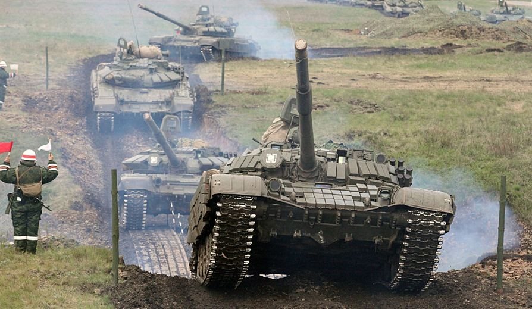

Zastosowania symulacji
Symulatory statków powietrznych, okrętów podwodnych, czołgów itp.
W ekonomii i biznesie
Systemy kolejkowe
Zarządzanie zapasami
Wycena instrumentów pochodnych (np. opcji)
Ocena projektów inwestycyjnych (m.in. VaR)
W naukach społecznych
Dynamiczna teoria wpływu społecznego Nowaka-Latane
Prognozowanie podziału miejsc w parlamencie
Dynamika populacji
Nauki przyrodnicze
Meteorologia – prognozy pogody
Analiza rozprzestrzeniania się zanieczyszczeń (np. dyspersji odorantów)
W naukach inżynieryjnych
Budownictwo – wytrzymałość konstrukcji
Lotnictwo – wytrzymałość konstrukcji
Elektronika – analiza obwodów elektrycznych
Matematyka
Numeryczne wyznaczanie rozwiązań równań różniczkowych
Symulacyjne wyznaczanie dystrybuant funkcji, które nie dają się całkować (np. rozkładu normalnego)